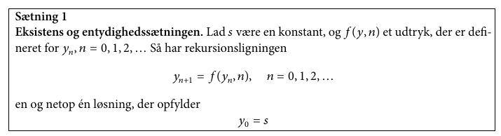
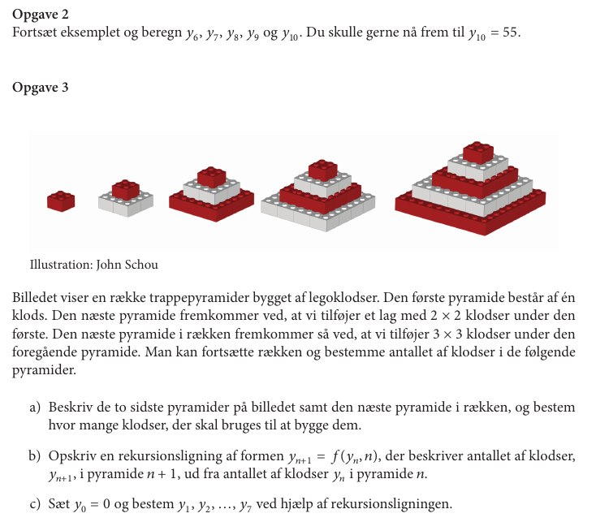
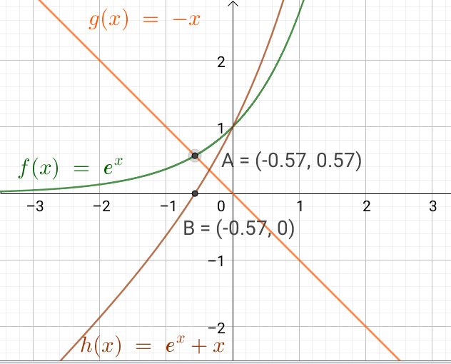

Diskret matematik og differentialligninger
Diskret matematik
Hvorfor skal vi have det?
Bare fordi
I kan få opgaver til skriftlig eksamen som ligner denne:
Og fordi
I skal bruge det i jeres matematikprojekt om krig og Lanchesters love.
Rekursionsligninger
Førsteordens rekursionsligninger
Første orden betyder, at man kun behøver at kende én tidligere værdi, for at kunne udregne den efterfølgende. Hvis man skal kende to foregående værdier for at kunne udregne den næste, er der tale om en andenordens rekursionsligning. I kan selv gætte jer til, hvad højere ordener kræver.
- Læs Eksempel 2 og 3 på side 5 og 6.
- Sørg for at have styr på, at kunne opskrive et udtryk for \(f(y_n,n)\) for n!.
- Brug jeres viden til at kunne besvare opgave 1 på side 6.
Begyndelsesbetingelser og entydighed

Ved at beslutte sig for, at der skal være en fast begyndelsesbetingelse er der kun en løsning til rekursionsligningerne.
- Følg eksempel 4 på side 7.
- Løs opgave 2 og 3 på side 8.

Førsteordens lineære rekursionsligninger
- Find nogle eksempler på rekursionsligninger, som opfylder disse betingelser, og nogen, som ikke gør, i teksten.
- Læg mærke til forskellen på homogen og inhomogen.
Samtlige løsninger
- Nogle gange er det muligt at bestemme \(y_n\) til et bestemt \(n\) uden at udregne alle de forrige \(n-1\) værdier først.
- Læs eksempel 5 på side 9 og 10 for at få en forklaring til dette.
- Læs eksempel 6 på side 10 for at en idé til, hvordan konstanten \(k\) bestemmes ud fra en begyndelsesbetingelse.
- (Det svarer lidt til at bestemme en specifik værdi for integrationskonstant i et ubestemt integrale).
- Løs opgave 4 på side 11.
- Læs den efterfølgende opsummering.
Samtlige løsninger til den inhomogene førsteordens lineære rekursionsligning
- \(z_n\) kaldes en partikulær løsning.
- Samtlige løsninger til den inhomogene førsteordens lineære rekursionsligning er lig summen af samtlige løsninger til den tilsvarende homogene rekursionsligning og én partikulær løsning til den inhomogene rekursionsligning.
Hvordan finder man så en partikulær løsning?
- I praksis kan man mange gange slippe afsted med at gætte sig til en løsning.
- Læs eksempel 7 side 12 for en gættemetode og løs selv opgave 5 også på side 12.
- Nogle gange kan man ikke altid bare gætte, og så må man bruge andre strategier. Løs opgave 6 side 13 for at blive klogere på dette.
Numerisk nulpunktsbestemmelse
- Mange ligninger kan løses symbolsk/algebraisk, men ikke alle.
- De ligninger, som ikke har symbolske løsninger kaldes transcendente ligninger.
Et eksempel kunne være
\[e^x=-x\]

- Transcendente ligninger skal i stedet løses numerisk.
- En numerisk løsningsmetode er Newtons metode.
Newtons metode
Den grundlæggende idé tager udgangspunkt i tangenten til en funktion f(x).
\[T_{x_0} (x) = f'\left(x_0\right) \cdot \left( x - x_0 \right) + f(x_0)\]
- I et punkt \((x_0;y_0)\) går tangenten gennem punktet og ligner tilnærmelsesvis funktionen f(x), når x er tæt på \(x_0\).
- Læs fra midt side 14 til toppen af side 17 for forklaringer.
- Løs opgave 7 på side 17
- Læs eksempel 9 side 17 og 18.
- Løs opgave 8 side 19, som tager udgangspunkt i eksempel 9.
- Løs opgave 9 side 19
Tilnærmede løsninger af differentialligninger
- I har hørt det mange gange; Langt fra alle differentialligninger har en symbolsk/algebraisk løsning.
- I stedet kan disse løses numerisk.
- Den simpleste numeriske løsningsmetode til en førsteordens differentialligning hedder Eulers metode.
Eulers metode
- Dette siger dog ikke så meget, så læs eksempel 10 side 20 - 22 i stedet for.
- Læg mærke til, at Eulers metode altid vil ramme ved siden af det "rigtige".
- Ved at gøre skridtlængden h mindre, bliver fejlen dog også mindre.
- Løs nu opgave 10 på side 23
- Læs først eksempel 11 på side 23, som bl.a. diskuterer at nogle differentialligninger/rekursionsligninger kan løses symbolsk, men at man ikke generelt kan opskrive en formel til bestemmelse af y-værdier ud fra n.
- Læs nu eksempel 12 side 24, som beskriver en rekursionsligning, der har en direkte formel som løsning.
- Til sidst, løs opgave 11 på side 24.
Alternativ forklaring af Eulers metode
- Man kan også forklare Eulers metode på følgende måde.
Der er mange differentialligninger, som har tiden som den uafhængige variabel, og kan skrives Sommerferie
\[\frac{dy}{dt} = f(t,y)\]
Denne differentialligning kan vi i stedet skrive som en differensligning
\[\frac{\Delta y}{\Delta t} = f(t,y)\]
\[\frac{\Delta y}{\Delta t} = f(t,y)\]
- Vi husker at \(\Delta y = y_1 - y_0\)
- Eller mere generelt \(\Delta y = y_{n+1} - y_n\)
- \(\Delta t\) er skridtlængden og svarer til \(h\) fra tidligere.
\[\frac{y_{n+1}-y_n}{\Delta t} = f(t,y)\]
- Nu kan \(y_{n+1}\) isoleres
\[y_{n+1} = f(t,y) \cdot \Delta t + y_n\]
For at beregne den næste y-værdi skal man altså
- udregne værdien for \(f(t,y)\) i det nuværende (tids)punkt, hvor de nuværende værdier for t og y indsættes
- gang dette med skridtlængden (som gerne skal være så lille som mulig, for at mindske fejl.
- læg dette til den forrige y-værdi.
Så simpelt er det. :)
Differentialligninger
Hvorfor skal vi undervises i differentialligninger?
Linket er: https://youtu.be/ifbaAqfqpc4
Resten af siderne er bare genbrug fra tidligere, da vi arbejdede med differentialligninger sidst.
Forskellige typer
Eksponentiel vækst
Differentialkvotienten er proportionel med funktionen selv.
Differentialligning \[y'=k \cdot y\]
Løsning \[y=c \cdot e^{k\cdot x}\]
\(k\) er vækstkonstanten
\(c\) er en integrationskonstant
Grafiske eksempler

Forskudt eksponentiel vækst
Differentialkvotienten er lineært afhængig af funktionen selv.
Differentialligning \[y'=a\cdot y +b\]
Løsning \[y=-\frac{b}{a} + c\cdot e^{a\cdot x}\]
\(- \frac{b}{a}\) angiver en vandret asymptote, som kan parallelforskyde en "almindelige" eksponentialfunktion og eller ned ad y-aksen.
Grafiske eksempler

Logistisk vækst
Eksponentiel vækst med begrænsning.
Tre forskellige differentialligninger til at beskrive den samme vækst.
| Diffligning | Løsning | |
|---|---|---|
| 1 | \(y' = k \cdot y (a - y)\) | \(y=\frac{a}{1+c \cdot e^{-k a x}}\) |
| 2 | \(y' = y (b - a y)\) | \(y=\frac{\frac{b}{a}}{1+c e^{-b x}}\) |
| 3 | \(y' = k \cdot y \cdot \frac{(K - y)}{K}\) | \(y=\frac{K}{1+c\cdot e^{-k \cdot x}}\) |
Særligt nr. 3 giver fysisk mening.
Differentialligning \[y' = k \cdot y \cdot \frac{(K - y)}{K}\]
Løsning \[y=\frac{K}{1+c\cdot e^{-k \cdot x}}\]
\(k\) er den samme vækstkonstant, som for almindelig eksponentiel vækst, mens \(K\) er maksimal værdi for \(y\). \(y=K\) og \(y=0\) er altså begge vandrette asymptoter, som begrænser væksten.
Grafiske eksempler
Tjek at løsningerne faktisk er sande
| Diffligning | Løsning | |
|---|---|---|
| 1 | \(y'=k \cdot y\) | \(y=c \cdot e^{k\cdot x}\) |
| 2 | \(y'=a\cdot y +b\) | \(y=-\frac{b}{a} + c\cdot e^{a\cdot x}\) |
| 3 | \(y' = k \cdot y (a - y)\) | \(y=\frac{a}{1+c \cdot e^{-k a x}}\) |
| 4 | \(y' = y (b - a y)\) | \(y=\frac{\frac{b}{a}}{1+c e^{-b x}}\) |
| 5 | \(y' = k \cdot y \cdot \frac{(K- y)}{K}\) | \(y=\frac{K}{1+c\cdot e^{-k \cdot x}}\) |
- Indsæt de tilhørende løsninger i de respektive differentialligninger, og tjek om ligningen er sand.
- Der skal altså differentieres på venstre side.
Grafisk Undersøgelse
Linjeelementer
Et linje element er et kendt punkt på en graf med tilhørende hældning. Hvis \(x_0\) er et kendt x-koordinat så kan et linjeelement skrives som
\[(x_0\,,\,f(x_0) \,;\, f'(x_0))\]
Eksempel
For differentialligningen
\[y' = 2\cdot y -10\]
skal vi finde linjeelementerne i hhv A(-3,5) , B(-2,8) , C(1,3) og D(2,-2).
- A: \(y'=2 \cdot 5-10 = 0\) Ergo \((-3\,,\,-5\,;\, 0)\)
- B: \(y'=2 \cdot 8 -10 = 6\) Ergo \((-2\,,\,8\,;\, 6)\)
- C: \(y'=2 \cdot 3 -10 = -4\) Ergo \((1\,,\,3\,;\, -4)\)
- D: \(y'=2 \cdot (-2) -10 = -14\) Ergo \((2\,,\,-2\,;\, -14)\)
Grafisk er det nemmest at anvende geogebras funktion retningsfelt.
Retningsfelt(2*y-10,10) giver følgende:

Løsning af differentialligninger
1. år på uni
When you battle differential equations you better wear
S H I E L D S
Linket er: https://youtu.be/jb9U-ZOlvDs
Vi kommer til at arbejde med.
- S eparable
- H omogeneous
- I ntegrating factor
- E xact
- L inear
- D irect
- S ubstitution
Men i rækkefølgen
- D irect
- S eparable
- L inear
Direkte løsninger
Hvis højresiden af differentialligningen ikke afhænger af \(y\), men kun af funktioner af x eller konstanter, kan differentialligningen løses ved (simpel) integration. Altså på formen: \[y' = f(x)\]
Eksempel
Vi skal løse \[\frac{dy}{dx} = 4 e^x + \sin (x)\]
\[\int \frac{dy}{dx} \,dx = \int 4 e^x + \sin (x)\, dx\]
\[y = \int 4 e^x + \sin (x)\, dx\]
\[y = 4 e^x - \cos (x) + c\]
Opgaver Team-par-solo
Bestem den fuldstændige løsning til følgende differentialligninger:
- \(\frac{d}{dx}f = \cos \left( x \right)\)
- \(f'(x) = 2 x^5\)
- \(\frac{d}{dx}f = k\)
- \(\frac{d}{dt}f(t) = 6t\)
- \(\frac{d}{dx}f = 2x^3+4 x^{-2}\)
Opgaver Chef og sekretær
- trin: Chefen giver trin-for-trin instruktioner til sekretæren
- trin: Sekretæren nedskriver chefens løsning, eller udfører hans instruktion trin for trin.
- trin: Sektretæren roser chefen, hvis instruktionen fører til en løsning. Ellers hjælper sektretæren med at få løst opgaven og roser stadig chefen.
- trin: Roller byttes.
Bestem den fuldstændige løsning til følgende differentialligninger:
- \(\frac{d}{dx}f = e^x\)
- \(\frac{d}{dx}f = 3 \sin \left( x \right)\)
- \(2 \cdot f'(x)= x^{-5}+3\)
- \(\frac{d}{dx}f = \sqrt{x-8}\)
Separation af variable
Hvis differentialligningen kan skrives op som
\[\frac{d y}{d x} = f(y)\cdot g(x)\]
kan den løses sådan her:
\[\int \frac{1}{f(y)} \, dy = \int g(x) \, dx\]
Eksempel
Vi skal løse følgende differentialligning med tilhørende betingelse:
\[\frac{d y}{dx} = 2 x y^2 \,,\, y(2)=1\]
Vi separerer med y'erne på venstre side og x'erne på højre
\[\int \frac{1}{y^2} \, dy = \int 2 x \, dx\]
og integrerer
\[\int \frac{1}{y^2} \,dx = \int y^{-2}\,dx = \frac{y^{-1}}{-1} + k_1 = - \frac{1}{y} + k_1\]
\[\int 2x \,dx = x^2 + k_2\]
Det hele sættes sammen igen.
\[- \frac{1}{y}+k_1 = x^2+k_2\]
Integrationskonstanterne lægges sammen til én konstant \(k\) og y isoleres
\[y=\frac{-1}{x^2+k}\]
Den partikulære løsning findes ved at indsætte oplysningerne fra opgaven i den fundne generelle løsning og isolere \(k\).
\[1 = \frac{-1}{2^2+k}\to 4 + k = -1 \to k = -5 \]
Den partikulære løsning er da: \[y = f(x) = \frac{-1}{x^2-5}\]
Et grafisk overblik kan skabes i geogebra vha kommandoerne
RetningsFelt(2*x*y^2,15)BeregnODE(2*x*y^2,(2,1))

Opgaver
Opgave 1 (Ping-pong-par)
I hvilke tilfælde kan man anvende separation af de variable?
- \(\frac{dy}{dx} = \frac{x+1}{y}\)
- \(\frac{dy}{dx} = x y +1\)
- \(\frac{dy}{dx} = \frac{x}{y+2}\)
- \(\frac{dy}{dx} + y = \frac{x+y^2}{y}\)
- \(\frac{dy}{dx} = x -y\)
- \(\frac{dy}{dx} = \frac{x-y-1}{y+1}+1\)
Opgave 2 (Team-par-solo)
Bestem med separation af de variable den fuldstændige løsning til følgende differentialligninger:
- \(\frac{dy}{dx} = xy\)
- \(\frac{dy}{dx} = \left( x^2+ 4\right)y\)
- \(\frac{dy}{dx} = - \frac{y^2}{x+1}\)
- \(\frac{dy}{dx} = 2 \sqrt{y}\)
- \(\frac{dy}{dx} = e^{-2y}\)
- \(\frac{dy}{dx} = y^{-2}\)
- \(\frac{dy}{dx} = \frac{\cos(x)}{e^y}\)
- \(\frac{dy}{dx} = \frac{\sqrt{x}}{y}\)
- \(\frac{dy}{dx} = x \left( y-2 \right)\)
Vi skulle vel aldrig have et lille bevis
Læs følgende bevis, men brug Rollelæsning
Rollelæsning:
Fire roller: Oplæser, Referent, Overskriftmester og sammenhængsmester.
- Oplæser læser første del.
- Referenten giver et referat af det vigtigste indhold.
- Overskriftmesteren finder en dækkende overskrift, og skriver den ned.
- Sammenhængsmesteren forklarer sammenhængen med det forudgående eller prøver at forudsige, hvad der følger.
- Rollerne roterer med uret og næste afsnit læses.
Lineære 1.ordens ordinære differentialligninger
Nu begynder det at blive lidt lakrids.
\[\frac{dy}{dx} + P(x) \cdot y = Q(x)\]
Vi benytter Lyt-tegn-skriv
Lyt-tegn-skriv
- Lyt, mens stoffet forklares.
- Der stoppes op, og der udarbejdes en afbildning (tegning/skitse, ligninger måske) af det vigtigste.
- Forklar afbildning til hinanden i teamet/par vha. ordet rundt.
- Skriv individuel opsummering med tekst ligninger.
- Forfra.
Hold tungen lige i munden
\[\frac{dy}{dx} + P(x) \cdot y = Q(x)\]
- Vi skal indføre en magisk funktion, kaldet \(\mu(x)\), som er en integrationsfaktor.
- I skal ikke bekymre jer om, hvordan den ser ud lige nu.
- Multiplicer alle led i differentialligningen med denne integratationsfaktor:
\[\mu(x) \cdot \frac{dy}{dx} + \mu(x)\cdot P(x) y = \mu(x) \cdot Q(x)\]
Det magiske ved \(\mu(x)\)
Det magiske ved \(\mu(x)\) er, at det antages, at den opfylder betingelsen:
\[\mu(x) \cdot P(x) = \mu'(x)\]
- I skal stadig ikke bekymre jer om, hvordan \(\mu(x)\) faktisk ser ud.
- Nu kan vores differentialligning skrive som:
Produktreglen for differentiation
Venstre side af differentialligningen er blot produktreglen \[\mu(x) \cdot \frac{dy}{dx} + \mu'(x) \cdot y = \frac{d}{dx} \left( \mu(x) \cdot y(x) \right)\]
- Nu kan differentialligningen skrives som:
Husk, at vi leder efter \(y(x)\)
\[\frac{d}{dx}\left( \mu(x) \cdot y(x) \right) =\mu(x) \cdot Q(x)\] Nu kan vi gøre noget ved differentialligningen for at få fat i \(y(x)\).
- Vi integrerer begge sider af differentialligningen mht \(x\).
- Integrationskonstanten \(c_1\) er vigtig at huske!
- Nu har vi løsningen til differentialligningen,
- men vi mangler stadig at bestemme, hvad den magiske integrationsfaktor \(\mu(x)\) skal være.
Nu kan \(\mu(x)\) bestemmes
Vi skal bruge vores antagelse fra tidligere, nemlig \[\mu(x)\cdot P(x) = \mu'(x)\]
- \(\mu(x)\) kan findes vha separation af variable
Nu kan det hele samles
Vi har den generelle løsning \[y(x) =\frac{\int \mu(x) \cdot Q(x)\, dx + c_1}{\mu(x)}\] og en måde at udregne integrationsfaktoren på \[\mu(x) = e^{\int P(x) \,dx}\cdot c_3\]
- Lad os samle det.
- den sidste omskrivning er blot for at finde en enkelt integrationskonstant.
Konklusion
For en lineær differentialligning på formen \[\frac{dy}{dx} + P(x)\cdot y = Q(x)\]
er løsningen givet ved \[y(x) = \frac{\int \mu(x) \cdot Q(x)\, dx+c}{\mu(x)}\,,\] hvor \[\mu(x) = e^{\int P(x) \,dx}\]
En procedure er dog mere anvendelig end dette.
Procedure
- Omskriv differentialligningen, så den ligner \[\frac{dy}{dx} + P(x) \cdot y = Q(x)\]
- Bestem integrationsfaktoren \(\mu(x)\) via \[\mu(x) = e^{\int P(x) \, dx}\]
- Multiplicér begge sider af differentialligningen med \(\mu(x)\) og tjek, at venstresiden bliver til produktreglen (og skriv den på denne måde) \[\frac{d}{dx}\left( \mu(x) \cdot y(x) \right)\]
- Integrér begge sider af differentialligningen og sørg for at have styr på integrationskonstanten.
- Isolér \(y(x)\) i den fremkomne ligning.
Eksempel
\[\frac{dy}{dx} = 9.8 - 0.196 \cdot y\]
- omskrivning \[\frac{dy}{dx} +0.196\cdot y = 9.8\]
- \(\mu(x)=e^{\int P(x)dx}\) \[\mu(x) = e^{\int 0.196 \, dx} = e^{0.196 x}\]
Multiplicér
\begin{align*} e^{0.196x}\cdot \frac{dy}{dx} +e^{0.196x}\cdot 0.196 \cdot y &=e^{0.196x}\cdot 9.8\\ \frac{d}{dx}\left( e^{0.196x}\cdot y \right) &= e^{0.196x}\cdot 9.8 \end{align*}
Integrér
\begin{align*}e^{0.196x}\cdot y &= \int e^{0.196x} \cdot 9.8 \,dx \\e^{0.196x}\cdot y &=9.8\cdot \frac{e^{0.196x}}{0.196} +c_1\end{align*}Isolér y
\begin{align*} y &= \frac{9.8\cdot e^{0.196x}}{0.196\cdot e^{0.196x}} + \frac{c_1}{e^{0.196x}} \\ y &=\frac{9.8}{0.196} + \frac{c_1}{e^{0.196x}}\\ y &= 50.0 + c_1 \cdot e^{-0.196 x}\end{align*}
\[y = 50.0 + c_1\cdot e^{-0.196x}\] Vi kan også tilføje begyndelses/randbetingelser.
Løsningskurven skal gå gennem \((0,48)\)
- Indsætter 0 på x's plads og 48 på y's plads \[48= 50.0 + c_1\cdot e^{-0.196\cdot 0}=50.0-c_1\]
- Isolerer \(c_1\) \[48 = 50.0 + c_1 \iff c_1 =-2\]
- Den specifikke løsning er da \[\boxed{y=50.0 -2\cdot e^{-0.196x}}\]
Retningsfelt og løsningskurve
Geogebra:
retningsfelt(9.8-0.196*y,15)beregnode(9.8-0.196*y,(0,48))
OBS: \(y'\) skal være isoleret og "højresiden" af diffligningen skal indtastes i geogebra.
Opgaver
Team-par-solo
(Hvis de fremkomne integraler er svære at løse, så brug CAS.)
Opgave 1: Løs differentialligningen \[y' -y - x \cdot e^x = 0\]
Opgave 2: Løs differentialligningen \[y' - 2y = x\]
Opgave 3: Løs differentialligningen \[x\cdot y' = y+2x^3\]
Opgave 4: Løs differentialligningen \[x^2 y' + x \cdot y + 2 =0\]
Opgave 5: Løs differentialligningen \[y' - y \cdot \tan (x) = \sin (x)\,,\text{ for } y(0)=1\]
Opgave 6: Løs differentialligningen \[y' + \frac{3}{x} \cdot y= \frac{2}{x^2}\,,\text{ for } y(1)=2\]